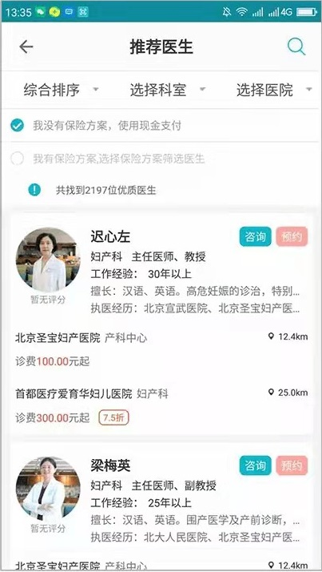
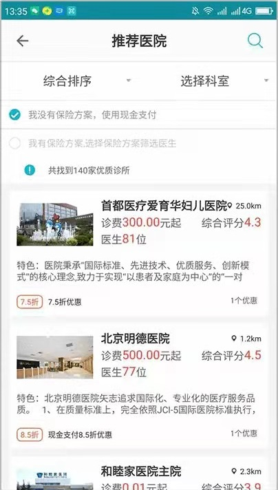
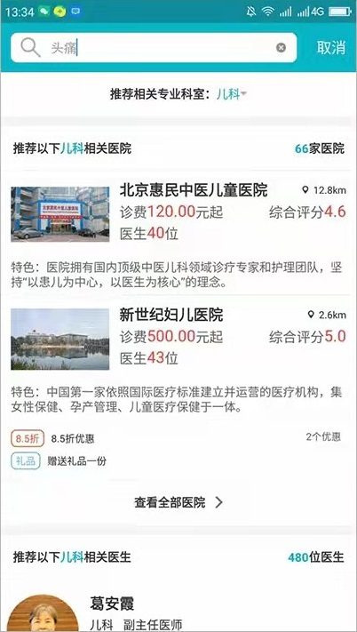
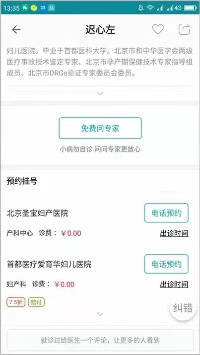

主要工作：
主要工作：
育果医生是中国领先的高端私立就诊折扣平台；是医疗健康领域唯一准确的医生排班信息平台；是一 款集医疗机构、保险机构，向高端人群提供诊疗服务、健康管理为一体的医疗类应用
负责育果医生移动端页面开发，主要负责模块是推荐医生页面，推荐医院页面，搜索页面，医生信息 页面。主要应用 vue，vueRouter，vuecli，webpack，vant 的 ui 框架。
   
为育果医生提供后台管理支持
主要使用用 BootStrap，jquery，webpack，element ui 框架开发响应式后台管理页面，实现添加医 院、添加医生信息操作页面、上传图片页面，医生排班编辑页面，福利信息添加录入页面、保险信息添加 页面。
兼职开发宣传页面
纽曼电器官网页面，包括首页、关于我们、新闻页面、产品中心页面、联系我们页面。